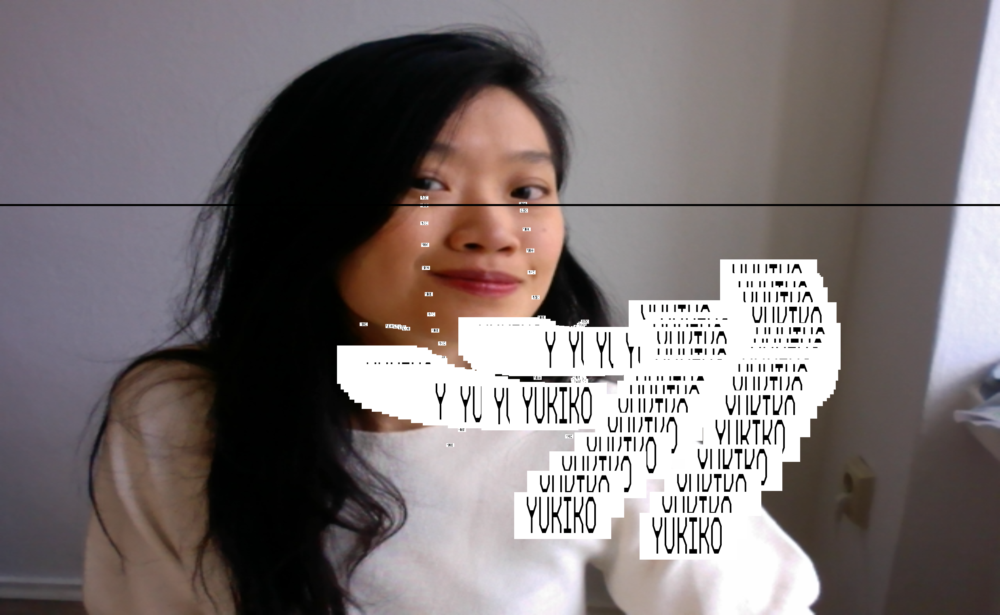

Hello, my name is Yun.
I come from Taiwan and currently study visual communication at Bauhaus University in Prof. Markus Weisbeck's class. Before coming to Germany,
I worked on a remote island for an artist residency program and studied Mechanical Engineering.
check out my portfolio

What I would like to learn from Yukiko?
☞ I want to learn how you mingle between your playful approaches, bold visual style, and experimental methods with the purpose of communication and clients' demands. (It was so impressive when you introduced your proposal for Münchner Kammerspiele.)
What I can bring to the studio?
✸ Creative coding and interactive stuff!
I love to learn code and explore technical tools to create graphics that look fresh. And I believe there will be more need for these.